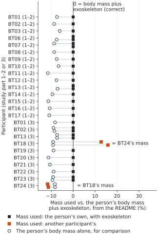
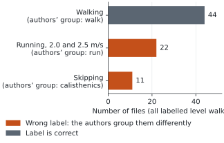
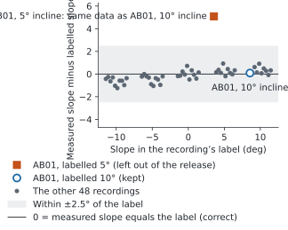
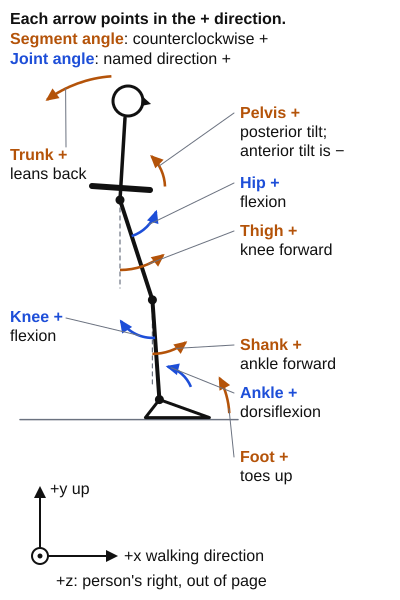

Broken vs fixed data
Each card describes one problem LocoHub found in a source dataset or in LocoHub’s own unreleased conversion code: what is wrong, what it means for the data, and what LocoHub does about it. The Before figure shows the data as published, or as LocoHub’s unreleased code computed it; the After figure shows what LocoHub will release. Both are checked against the same independent measurement, such as force plates or markers. Only clear errors are fixed (flipped signs, 180° offsets, wrong labels). Cards marked kept as published show a mismatch in one figure and leave the values unchanged. The same figures appear side by side in the original vs fixed section of the comparison page.
Most fixes are not in downloadable files yet. Each card says where it stands. A card means a second, independent reviewer reproduced the finding; it does not mean the dataset has been approved.
Georgia Tech 2024: per-kg moments use body mass plus the exoskeleton, not body mass alone
Found · kept as published · no new GT24 release yet
What’s wrong. The dataset’s README gives joint moments in N·m/kg but does not say which mass they were divided by; it was the person’s body mass plus the exoskeleton, which adds 6 to 8 kg.
How we know. The source gives some signals both in N·m and in N·m/kg, and dividing one by the other gives the mass that was used; in all 2,421 recordings it was body mass plus the exoskeleton, never body mass alone.
What it means for the data. Per-kg moments read 6 to 12 % lower than the same moments per kg of body mass alone. Separately, the body masses listed for BT18 and BT24 in the README’s participant table appear to be swapped (146 recordings); the moment values are unaffected, but it is not yet known which mass belongs to which participant.
What LocoHub does. LocoHub keeps the published values and states that they are per kg of body mass plus the exoskeleton; nothing is rescaled.

All 25 participant folders and 2,421 recordings shown. Evidence: mass check results (JSON) · README masses and policy (JSON) · logged decision D-GT24-C01-1 (backlog). Task GT24-C01, independently verified 2026-11-02.
Georgia Tech 2024: the ankle sign is the opposite of what the README says
Documented · values unchanged · no new GT24 release yet
What’s wrong. The dataset’s README says ankle plantarflexion (toes pointing down) is positive, but the published ankle angles and moments are positive for dorsiflexion (toes pulled up).
What it means for the data. Anyone who follows the README sees the ankle curves upside down: force-plate moments match the published sign in size and direction in 12 of 12 sampled legs, and push-off work and toe-walking postures agree too.
What LocoHub does. LocoHub keeps the published values, which already match its toes-up-positive columns, and documents that the README’s ankle sign is wrong. The README’s hip and knee statements are correct.


BT07, normal_walk_1_2_1-2_off, left leg: mean of 18 stances, one of 12 legs chosen at random (seed 20261031). Evidence: ankle sign audit (JSON). Task GT24-C02, independently verified 2026-10-30.
Georgia Tech 2023: running and skipping files are labelled as level walking
Relabel planned · values unchanged · not yet released
What’s wrong. LocoHub’s own converter labelled every “normal walk” file as level walking, although the dataset’s authors group the 2.0 and 2.5 m/s conditions as running and the skipping files as skipping (their “calisthenics” group, also in the paper’s Table 1).
What it means for the data. 33 of the 77 files (43 %) carry the wrong task label; the measured values themselves are not affected.
What LocoHub does. LocoHub will relabel them to follow the authors’ grouping, so running and skipping become their own tasks; only the label changes. The mistake is in LocoHub’s converter, not in the source data.

All 77 “normal walk” files from 12 recordings shown. Evidence: events and frames audit, finding F4 (JSON). Task GT23-C01, independently verified 2026-10-31.
Georgia Tech 2023: the README says joint moments are in N·m, but they are per kg
Documented · corrected files not yet released
What’s wrong. The dataset’s README lists joint moments in N·m and powers in W, but the published values were already divided by body mass.
What it means for the data. Read as N·m, the values are only 1/64 to 1/90 as large as the force-plate moments in all 8 sampled legs (about 98 to 99 % too small), never the same size.
What LocoHub does. LocoHub labels them N·m/kg and W/kg and does not divide by mass a second time. Which mass was used is the next card.


AB01, incline_walk_2, left leg, one stance; chosen at random (seed 20261031) from the 4 sampled legs of participants whose own body mass was used, so the units question is shown alone. Evidence: moment units audit (JSON). Task GT23-C02, independently verified 2026-10-30.
Georgia Tech 2023: per-kg moments were divided by another participant’s body mass
Correction decided by José · not yet run or released
What’s wrong. For 9 of 12 participants, the authors did not use the person’s own body mass to turn moments into per-kg moments; for most of them they used exactly another participant’s listed body mass.
How we know. The source gives some signals both in N·m and in N·m/kg, and dividing one by the other gives the mass that was used (where that was not possible, it was estimated from force-plate moments instead).
What it means for the data. Their per-kg moments in level walking are off by 20 % too low to 41 % too high.
What LocoHub does. José decided on 23 November 2026 to fix the 52 of 488 recordings where correcting to the person’s own mass lowers the error in every plausible case: their moments and powers get multiplied by the mass used divided by the own mass. Recordings where the mass used cannot be told stay as published, with a note. Of the 52, 7 have the mass used worked out exactly and the rest have it estimated from force plates; whether all of them are rescaled is still an open question. Not yet run.

All 12 participants shown. Evidence: mass check results (JSON) · per-trial rescaling check (JSON) · logged decisions D-GT23-C05-2 and D-GT23-C05-3 (backlog). Task GT23-C03, independently verified 2026-10-31.
UMich 2021: part of one right-ankle recording is off by 180°
Correction decided · not yet released
What’s wrong. For 5,429 frames of one recording’s right ankle (participant AB07, 10° incline), the motion-capture software reported the ankle angle in an equivalent but different way that shifts it by about 180°; the ankle did not move that way.
What it means for the data. Strides inside that stretch sit near −160°, far from the same ankle’s other strides, so they would look about 160° wrong in any plot or average.
What LocoHub does. LocoHub will convert those frames to the standard form and log each one; 2 of the 31 strides inside the stretch also contain one-frame jumps that this cannot fix and will be left out. The other ankle signals and the source copy are unchanged.


All strides of the right ankle in this recording; 29 of 31 inside strides kept. Evidence: stretch counts (JSON) · convention audit (JSON). Task UM21-C03, independently verified 2026-10-30.
UMich 2021: one recording’s pelvis was computed facing backwards
Correction decided · corrected files not yet released
What’s wrong. In one of 50 treadmill recordings (participant AB04, level walking), the motion-capture software computed the pelvis facing backwards (about 180° turned).
What it means for the data. The published pelvis tilt has the wrong sign in 114 of 114 right-side strides, as do the side-to-side pelvis tilt and the thigh and shank angles built on it; hip, knee and ankle angles and moments are unaffected.
What LocoHub does. For that recording only, LocoHub will flip the pelvis tilt sign using the marker evidence and recompute thigh and shank from it; every change is logged.


Right side, frames 3512–3675: the stride the audit drew at random (seed 20261101); side drawn at random (seed 20261031). Evidence: pelvis direction check (JSON). Task UM21-P01, independently verified 2026-10-31.
UMich 2021: LocoHub’s unreleased rebuild gets thigh and shank angles wrong
Formula decided · not yet released
What’s wrong. LocoHub’s unreleased treadmill rebuild code added the pelvis tilt to hip flexion, but the dataset’s authors subtract it (thigh = hip − pelvis), because the source reports forward pelvis tilt as positive.
What it means for the data. The rebuild’s thigh angle is off by about twice the pelvis tilt, roughly 38° in the example stride. The older UMich download used a different formula and is not shown.
What LocoHub does. LocoHub will use thigh = hip − pelvis and shank = hip − pelvis − knee, released as side-view estimates under the standard names. In LocoHub’s own sign convention, where forward pelvis tilt is negative, this is written thigh = pelvis + hip.


AB08 i5 right leg, frames 12709–12829: the stride the audit drew at random (seed 20261028). Pelvis tilt in this stride: median 19°. Evidence: thigh and shank check (JSON) · field policy (JSON). Task UM21-C01, independently verified 2026-10-27.
UMich 2021: treadmill task timing is shifted in some recordings
Correction decided · not yet released
What’s wrong. The published task intervals (when belt speed or incline changes) were timed on the belt-speed record, not on the motion data, and in some recordings that clock is off from the motion data.
What it means for the data. In 4 of 50 treadmill recordings the shift is 1.7 to 7.0 s (measured from heel and toe marker speed), so strides near a change get the wrong task label; 2 more have no belt-speed record and cannot be checked. The others agree within 0.2 s.
What LocoHub does. Recordings that fail this check are left out of the treadmill release; no interval is shifted or estimated. One of them, AB01 at 5° incline, is also a copy of another recording (next card).

All 50 treadmill recordings shown. Evidence: timing check results (JSON). Evidence independently verified 2026-10-31. Task UM21-T02 is not done; shown anyway, approved 2026-10-31.
UMich 2021: the AB01 5° incline recording is a copy of the 10° one
Recording left out of the release · not yet released
What’s wrong. The AB01 recording labelled 5° incline holds exactly the same motion, joint and force-plate data as the AB01 10° recording; only its task timing differs.
What it means for the data. The slope actually walked is 10.1° by the foot path and 9.8° by the force plates, not 5°; the other 48 recordings match their labels within the foot-path tolerance.
What LocoHub does. The 5° copy also fails the timing check, so LocoHub leaves it out of the treadmill release. The 10° recording passes both checks and stays, with a note that its data also appear under the 5° label.

All 50 treadmill recordings shown. Evidence: slope check (JSON) · timing check results, duplicate list (JSON) · logged resolution (backlog). Evidence independently verified 2026-10-31. Task UM21-T02 is not done; shown anyway, approved 2026-10-31. Logged as a coordinator resolution under D-UM21-T02-1 = A.
Background: one sign convention for every dataset
Several cards are about which direction counts as positive. LocoHub follows one written sign convention: segment angles are positive counterclockwise with the person facing right, and joint angles and moments are positive in their named direction (hip flexion, knee flexion, ankle dorsiflexion). Forward pelvis tilt is therefore negative in LocoHub files, although many sources report it as positive. This is a convention, not an error in any dataset.
Adopted 31 October 2026 · current downloads are legacy and predate it

Status as of 2 November 2026. Figures use only numbers saved in the linked audit records; no data were re-read to make this page. Problems still under review are not shown. Back to testing & data quality.